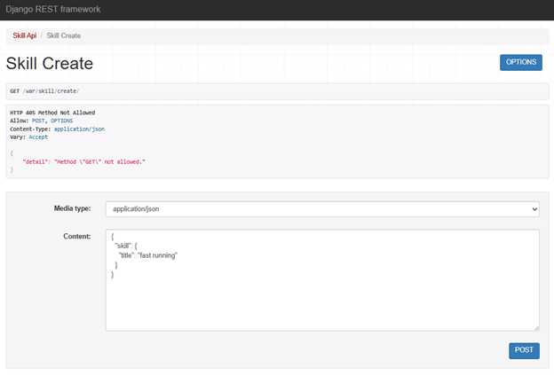
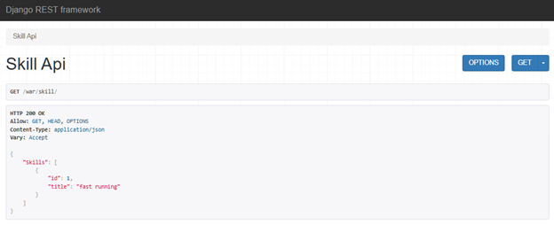
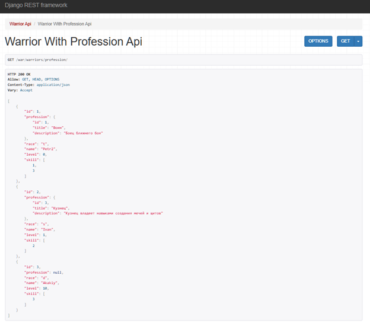
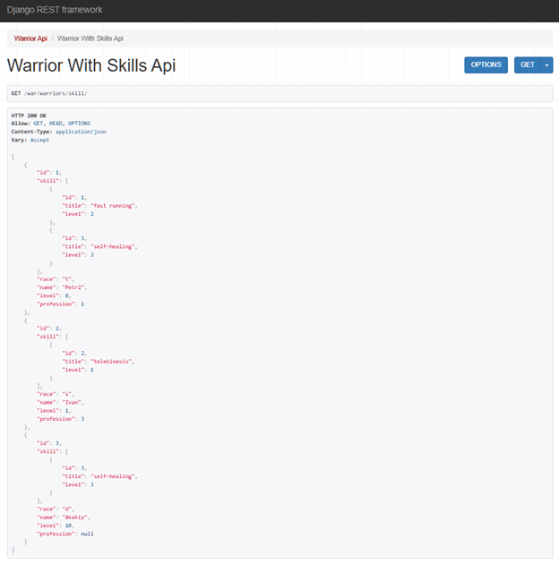
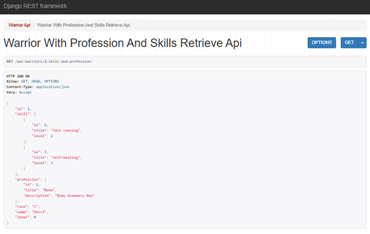
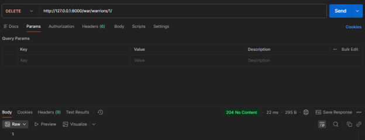
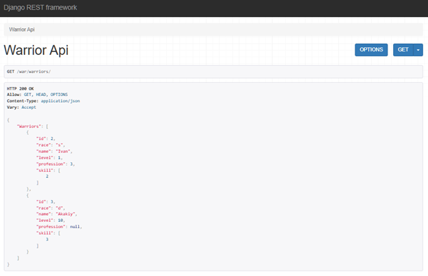
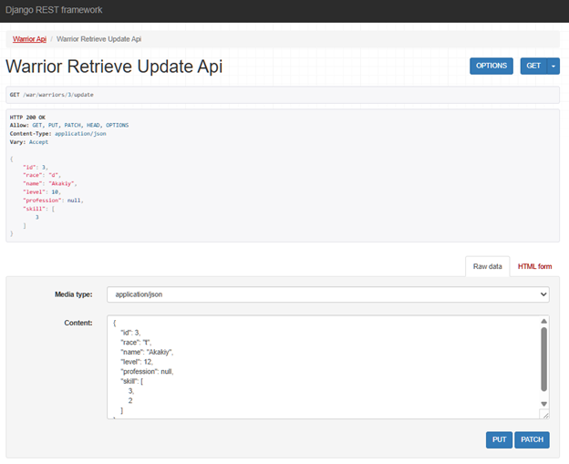
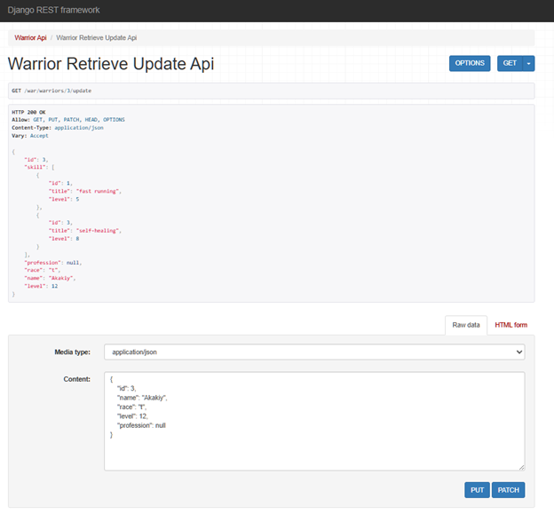

Практическая работа №3.2
Модели базы данных
class Warrior(models.Model):
"""
Описание война
"""
race_types = (
('s', 'student'),
('d', 'developer'),
('t', 'teamlead'),
)
race = models.CharField(max_length=1, choices=race_types, verbose_name='Расса')
name = models.CharField(max_length=120, verbose_name='Имя')
level = models.IntegerField(verbose_name='Уровень', default=0)
skill = models.ManyToManyField('Skill', verbose_name='Умения', through='SkillOfWarrior', related_name='warrior_skils')
profession = models.ForeignKey('Profession', on_delete=models.CASCADE, verbose_name='Профессия', blank=True, null=True)
class Profession(models.Model):
"""
Описание профессии
"""
title = models.CharField(max_length=120, verbose_name='Название')
description = models.TextField(verbose_name='Описание')
class Skill(models.Model):
"""
Описание умений
"""
title = models.CharField(max_length=120, verbose_name='Наименование')
def __str__(self):
return self.title
class SkillOfWarrior(models.Model):
"""
Описание умений война
"""
skill = models.ForeignKey('Skill', verbose_name='Умение', on_delete=models.CASCADE)
warrior = models.ForeignKey('Warrior', verbose_name='Воин', on_delete=models.CASCADE)
level = models.IntegerField(verbose_name='Уровень освоения умения')
Задание 1
Реализовать ендпоинты для добавления и просмотра скилов методом, описанным в пункте выше
# urls.py
# добавление скилов
path('skill/create/', SkillCreateView.as_view()),
# просмотр скилов
path('skill/', SkillAPIView.as_view()),
# views.py
class SkillCreateView(APIView):
def post(self, request):
skill = request.data.get("skill")
serializer = SkillCreateSerializer(data=skill)
if serializer.is_valid(raise_exception=True):
skill_saved = serializer.save()
return Response({"Success": "Skill '{}' created succesfully.".format(skill_saved.title)})
class SkillAPIView(APIView):
def get(self, request):
skills = Skill.objects.all()
serializer = SkillSerializer(skills, many=True)
return Response({"Skills": serializer.data})
# serializers.py
class SkillSerializer(serializers.ModelSerializer):
class Meta:
model = Skill
fields = "__all__"
Добавляем новый скил

Просматриваем скилы

Задание 2
Реализовать вывод полной информации о всех войнах и их профессиях (в одном запросе)
# urls.py
path('warriors/profession/', WarriorWithProfessionAPIView.as_view()),
# views.py
class WarriorWithProfessionAPIView(ListAPIView):
serializer_class = WarriorsWithProfessionSerializer
queryset = Warrior.objects.select_related('profession').all()
# serializers.py
class ProfessionSerializer(serializers.ModelSerializer):
class Meta:
model = Profession
fields = "__all__"
class WarriorsWithProfessionSerializer(serializers.ModelSerializer):
profession = ProfessionSerializer(read_only=True)
class Meta:
model = Warrior
fields = "__all__"

Реализовать вывод полной информации о всех войнах и их скилах (в одном запросе)
# urls.py
path('warriors/skill/', WarriorWithSkillsAPIView.as_view()),
# views.py
class WarriorWithSkillsAPIView(ListAPIView):
serializer_class = WarriorsWithSkillsSerializer
queryset = Warrior.objects.prefetch_related('skill').all()
# serializers.py
class SkillOfWarriorSerializer(serializers.ModelSerializer):
id = serializers.IntegerField(source='skill.id')
title = serializers.CharField(source='skill.title')
class Meta:
model = SkillOfWarrior
fields = ['id', 'title', 'level']
class WarriorsWithSkillsSerializer(serializers.ModelSerializer):
skill = SkillOfWarriorSerializer(many=True, read_only=True, source='skillofwarrior_set')
class Meta:
model = Warrior
fields = "__all__"

Реализовать вывод полной информации о войне (по id), его профессиях и скилах
# urls.py
path('warriors/<int:pk>/skill-and-profession/', WarriorWithProfessionAndSkillsRetrieveAPIView.as_view()),
# views.py
class WarriorWithProfessionAndSkillsRetrieveAPIView(RetrieveAPIView):
serializer_class = WarriorWithProfessionAndSkillsSerializer
queryset = Warrior.objects.prefetch_related('skill').select_related('profession')
# serializers.py
class ProfessionSerializer(serializers.ModelSerializer):
class Meta:
model = Profession
fields = "__all__"
class SkillOfWarriorSerializer(serializers.ModelSerializer):
id = serializers.IntegerField(source='skill.id')
title = serializers.CharField(source='skill.title')
class Meta:
model = SkillOfWarrior
fields = ['id', 'title', 'level']
class WarriorWithProfessionAndSkillsSerializer(serializers.ModelSerializer):
skill = SkillOfWarriorSerializer(many=True, read_only=True, source='skillofwarrior_set')
profession = ProfessionSerializer(read_only=True)
class Meta:
model = Warrior
fields = "__all__"

Реализовать удаление война по id
# urls.py
path('warriors/<int:pk>/delete', WarriorDestroyAPIView.as_view()),
# views.py
class WarriorDestroyAPIView(DestroyAPIView):
queryset = Warrior.objects.all()
Воспользуемся Postman:

Убедимся, что воина с id=3 больше нет в базе данных:

Реализовать редактирование информации о войне
# urls.py
path('warriors/<int:pk>/update', WarriorRetrieveUpdateAPIView.as_view())
# views.py
class WarriorRetrieveUpdateAPIView(RetrieveUpdateAPIView):
queryset = Warrior.objects.all()
def get_serializer_class(self):
if self.request.method in ['PUT', 'PATCH']:
return WarriorUpdateSerializer
return WarriorWithProfessionAndSkillsSerializer
# serializers.py
class WarriorUpdateSerializer(serializers.ModelSerializer):
profession = serializers.PrimaryKeyRelatedField(
queryset=Profession.objects.all(),
required=False,
allow_null=True
)
skill = SkillUpdateItemSerializer(many=True, write_only=True, required=False)
class Meta:
model = Warrior
fields = ['id', 'name', 'race', 'level', 'profession', 'skill']
def update(self, instance, validated_data):
instance.name = validated_data.get('name', instance.name)
instance.race = validated_data.get('race', instance.race)
instance.level = validated_data.get('level', instance.level)
instance.profession = validated_data.get('profession', instance.profession)
skill_data = validated_data.get('skill')
if skill_data is not None:
SkillOfWarrior.objects.filter(warrior=instance).delete()
for item in skill_data:
skill_id = item.get('skill_id')
level = item.get('level')
if skill_id is not None and level is not None:
try:
skill = Skill.objects.get(id=skill_id)
SkillOfWarrior.objects.create(
warrior=instance,
skill=skill,
level=level
)
except Skill.DoesNotExist:
raise serializers.ValidationError(f"Skill with id={skill_id} does not exist.")
instance.save()
return instance
class WarriorWithProfessionAndSkillsSerializer(serializers.ModelSerializer):
skill = SkillOfWarriorSerializer(many=True, read_only=True, source='skillofwarrior_set')
profession = ProfessionSerializer(read_only=True)
class Meta:
model = Warrior
fields = "__all__"

Обратимся к тому же эндпоинту и можем убедиться, что информация успешно обновлена:
